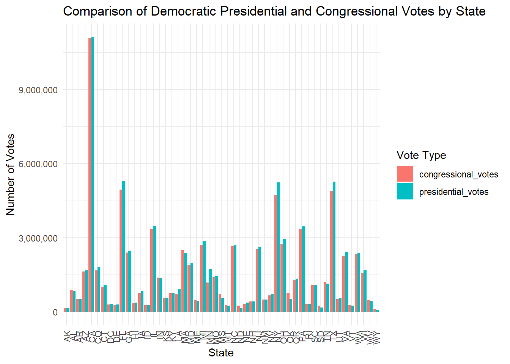
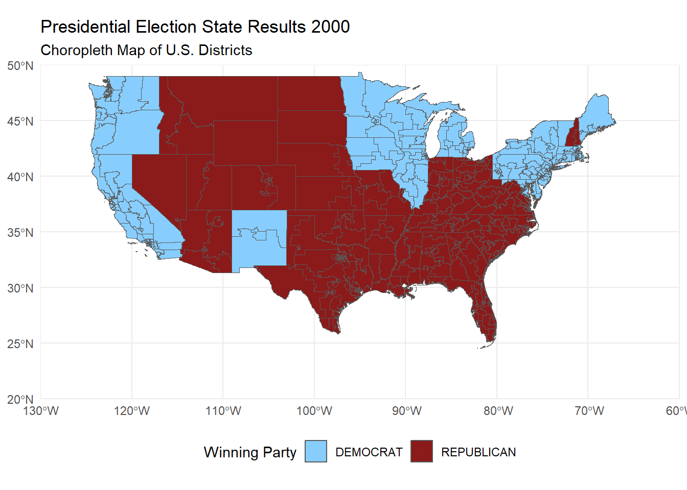
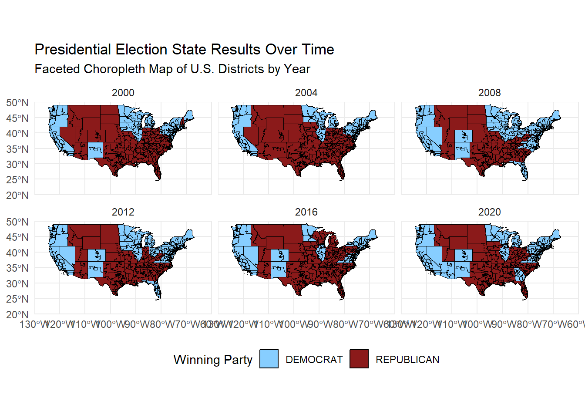

Code
library(dplyr)
library(kableExtra)
library(DT)
library(ggplot2)
library(tidyr)
library(scales)
library(sf)
library(gganimate)Gracie Zheng
This report is a political fact check, investigating the claim that the US Electoral College systematically biases election results away from the vox populi.
Loading necessary libraries for the report:
Setting the path to downloaded files of the U.S. House of Representatives from 1976 to 2022 1 and the U.S. presidency from 1976 to 2020 2 and reading the CSV files. These are provided by the MIT Election Data and Science Lab.
get_boundary_lines <- function(fname){
BASE_URL <- "https://cdmaps.polisci.ucla.edu/shp/"
fname_ext <- paste0(fname, ".zip")
if(!file.exists(fname_ext)){
FILE_URL <- paste0(BASE_URL, fname_ext)
download.file(FILE_URL,
destfile = fname_ext)
}
}
# 94 to 112 : 1976 to 2012
get_boundary_lines("districts094")
get_boundary_lines("districts095")
get_boundary_lines("districts096")
get_boundary_lines("districts097")
get_boundary_lines("districts098")
get_boundary_lines("districts099")
get_boundary_lines("districts100")
get_boundary_lines("districts101")
get_boundary_lines("districts102")
get_boundary_lines("districts103")
get_boundary_lines("districts104")
get_boundary_lines("districts105")
get_boundary_lines("districts106")
get_boundary_lines("districts107")
get_boundary_lines("districts108")
get_boundary_lines("districts109")
get_boundary_lines("districts110")
get_boundary_lines("districts111")
get_boundary_lines("districts112")census_2014 <- function(fname){
BASE_URL <- "www2.census.gov/geo/tiger/TIGER2014/CD/tl_2014_us_cd114.zip"
fname_ext <- paste0(fname, ".zip")
if(!file.exists(fname_ext)){
FILE_URL <- paste0(BASE_URL)
download.file(FILE_URL,
destfile = fname_ext)
}
}
census_2014("tl_2014_us_cd114.zip")
census_2015 <- function(fname){
BASE_URL <- "www2.census.gov/geo/tiger/TIGER2015/CD/tl_2015_us_cd114.zip"
fname_ext <- paste0(fname, ".zip")
if(!file.exists(fname_ext)){
FILE_URL <- paste0(BASE_URL)
download.file(FILE_URL,
destfile = fname_ext)
}
}
census_2015("tl_2015_us_cd114.zip")
census_2016 <- function(fname){
BASE_URL <- "www2.census.gov/geo/tiger/TIGER2016/CD/tl_2016_us_cd115.zip"
fname_ext <- paste0(fname, ".zip")
if(!file.exists(fname_ext)){
FILE_URL <- paste0(BASE_URL)
download.file(FILE_URL,
destfile = fname_ext)
}
}
census_2016("tl_2016_us_cd115.zip")
census_2017 <- function(fname){
BASE_URL <- "www2.census.gov/geo/tiger/TIGER2017/CD/tl_2017_us_cd115.zip"
fname_ext <- paste0(fname, ".zip")
if(!file.exists(fname_ext)){
FILE_URL <- paste0(BASE_URL)
download.file(FILE_URL,
destfile = fname_ext)
}
}
census_2017("tl_2017_us_cd115.zip")
census_2018 <- function(fname){
BASE_URL <- "www2.census.gov/geo/tiger/TIGER2018/CD/tl_2018_us_cd116.zip"
fname_ext <- paste0(fname, ".zip")
if(!file.exists(fname_ext)){
FILE_URL <- paste0(BASE_URL)
download.file(FILE_URL,
destfile = fname_ext)
}
}
census_2018("tl_2018_us_cd116.zip")
census_2019 <- function(fname){
BASE_URL <- "www2.census.gov/geo/tiger/TIGER2019/CD/tl_2019_us_cd116.zip"
fname_ext <- paste0(fname, ".zip")
if(!file.exists(fname_ext)){
FILE_URL <- paste0(BASE_URL)
download.file(FILE_URL,
destfile = fname_ext)
}
}
census_2019("tl_2019_us_cd116.zip")
census_2020 <- function(fname){
BASE_URL <- "www2.census.gov/geo/tiger/TIGER2020/CD/tl_2020_us_cd116.zip"
fname_ext <- paste0(fname, ".zip")
if(!file.exists(fname_ext)){
FILE_URL <- paste0(BASE_URL)
download.file(FILE_URL,
destfile = fname_ext)
}
}
census_2020("tl_2020_us_cd116.zip")
census_2021 <- function(fname){
BASE_URL <- "www2.census.gov/geo/tiger/TIGER2021/CD/tl_2021_us_cd116.zip"
fname_ext <- paste0(fname, ".zip")
if(!file.exists(fname_ext)){
FILE_URL <- paste0(BASE_URL)
download.file(FILE_URL,
destfile = fname_ext)
}
}
census_2021("tl_2021_us_cd116.zip")
census_2022 <- function(fname){
BASE_URL <- "www2.census.gov/geo/tiger/TIGER2022/CD/tl_2022_us_cd116.zip"
fname_ext <- paste0(fname, ".zip")
if(!file.exists(fname_ext)){
FILE_URL <- paste0(BASE_URL)
download.file(FILE_URL,
destfile = fname_ext)
}
}
census_2022("tl_2022_us_cd116.zip")Initial Exploration of Vote Count Data
# Filter data for 1976 and 2022
house_1976 <- subset(house, year == 1976)
house_2022 <- subset(house, year == 2022)
# Count the number of seats per state in 1976 and 2022
seats_1976 <- aggregate(state_po ~ state, data = house_1976, FUN = length)
seats_2022 <- aggregate(state_po ~ state, data = house_2022, FUN = length)
# Rename columns for clarity
colnames(seats_1976) <- c("state", "seats_1976")
colnames(seats_2022) <- c("state", "seats_2022")
seats_change <- merge(seats_1976, seats_2022, by = "state", all = TRUE)
seats_change$seat_diff <- seats_change$seats_2022 - seats_change$seats_1976
# Sort to find the states with the most gain or loss
seats_change <- seats_change[order(seats_change$seat_diff, decreasing = TRUE), ]
seats_change |>
mutate(seat_diff = ifelse(seat_diff > 0,
cell_spec(seat_diff, color = "green"),
cell_spec(seat_diff, color = "red"))) |>
kable("html", escape = FALSE, caption = "Change in House Seats by State (1976-2022)") %>%
kable_styling("striped", full_width = F)| state | seats_1976 | seats_2022 | seat_diff | |
|---|---|---|---|---|
| 9 | FLORIDA | 29 | 72 | 43 |
| 43 | TEXAS | 52 | 93 | 41 |
| 6 | COLORADO | 16 | 33 | 17 |
| 3 | ARIZONA | 13 | 26 | 13 |
| 42 | TENNESSEE | 27 | 37 | 10 |
| 37 | OREGON | 14 | 23 | 9 |
| 44 | UTAH | 6 | 15 | 9 |
| 1 | ALABAMA | 19 | 27 | 8 |
| 20 | MARYLAND | 18 | 26 | 8 |
| 18 | LOUISIANA | 16 | 22 | 6 |
| 28 | NEVADA | 5 | 11 | 6 |
| 45 | VERMONT | 3 | 9 | 6 |
| 50 | WYOMING | 2 | 7 | 5 |
| 4 | ARKANSAS | 7 | 11 | 4 |
| 5 | CALIFORNIA | 100 | 104 | 4 |
| 15 | IOWA | 17 | 21 | 4 |
| 19 | MAINE | 5 | 9 | 4 |
| 25 | MISSOURI | 23 | 27 | 4 |
| 33 | NORTH CAROLINA | 28 | 32 | 4 |
| 47 | WASHINGTON | 26 | 30 | 4 |
| 23 | MINNESOTA | 25 | 28 | 3 |
| 26 | MONTANA | 4 | 7 | 3 |
| 31 | NEW MEXICO | 5 | 8 | 3 |
| 46 | VIRGINIA | 32 | 35 | 3 |
| 2 | ALASKA | 3 | 5 | 2 |
| 10 | GEORGIA | 27 | 29 | 2 |
| 14 | INDIANA | 24 | 26 | 2 |
| 11 | HAWAII | 8 | 9 | 1 |
| 12 | IDAHO | 4 | 5 | 1 |
| 29 | NEW HAMPSHIRE | 5 | 6 | 1 |
| 39 | RHODE ISLAND | 6 | 7 | 1 |
| 40 | SOUTH CAROLINA | 20 | 21 | 1 |
| 34 | NORTH DAKOTA | 3 | 3 | 0 |
| 32 | NEW YORK | 159 | 158 | -1 |
| 49 | WISCONSIN | 31 | 30 | -1 |
| 8 | DELAWARE | 6 | 4 | -2 |
| 48 | WEST VIRGINIA | 8 | 6 | -2 |
| 17 | KENTUCKY | 20 | 17 | -3 |
| 24 | MISSISSIPPI | 12 | 9 | -3 |
| 27 | NEBRASKA | 10 | 7 | -3 |
| 41 | SOUTH DAKOTA | 5 | 2 | -3 |
| 21 | MASSACHUSETTS | 41 | 36 | -5 |
| 36 | OKLAHOMA | 19 | 13 | -6 |
| 7 | CONNECTICUT | 27 | 19 | -8 |
| 16 | KANSAS | 17 | 9 | -8 |
| 30 | NEW JERSEY | 65 | 53 | -12 |
| 13 | ILLINOIS | 66 | 46 | -20 |
| 35 | OHIO | 64 | 33 | -31 |
| 38 | PENNSYLVANIA | 67 | 32 | -35 |
| 22 | MICHIGAN | 97 | 51 | -46 |
# Filter to only include New York elections (where fusion voting applies)
ny_house <- subset(house, state_po == "NY")
ny_house <- ny_house |>
filter(!candidate %in% c("BLANK VOTE/SCATTERING"))
# Separate out major party line votes (fusion_ticket == FALSE)
ny_major_party_votes <- ny_house|>
filter(fusion_ticket == FALSE) |> # Only include votes cast on major party lines
group_by(year, district, candidate) |>
summarise(major_party_votes = sum(candidatevotes, na.rm = TRUE)) |>
ungroup()
# Sum total votes across all lines (fusion votes included)
ny_total_votes <- ny_house|>
group_by(year, district, candidate) |>
summarise(total_votes = sum(totalvotes, na.rm = TRUE)) |>
ungroup()
# Merge total votes and major party-only votes
ny_results <- merge(ny_total_votes, ny_major_party_votes, by = c("year", "district", "candidate"), all.x = TRUE)
# Get the winners under both systems: total votes (fusion) and major-party-only votes
ny_results <- ny_results|>
group_by(year, district) |>
mutate(
fusion_winner = candidate[which.max(total_votes)], # Winner using total (fusion) votes
major_party_winner = ifelse(sum(major_party_votes) > 0, candidate[which.max(major_party_votes)], NA) # Check if major party votes exist
) |>
ungroup()
# Find cases where the winners differ
ny_different_outcome <- ny_results|>
filter(fusion_winner != major_party_winner)|>
select(year, district, fusion_winner, major_party_winner) |>
distinct()
# Display an interactive table with DT::datatable
datatable(ny_different_outcome,
options = list(pageLength = 5, autoWidth = TRUE),
caption = 'New York Elections with Different Outcomes Under Fusion Voting')# Filter for Democratic candidates in presidential data
dem_presidential_votes <- president|>
filter(party_detailed == "DEMOCRAT") |>
group_by(year, state_po) |>
summarise(presidential_votes = sum(candidatevotes, na.rm = TRUE)) |>
ungroup()
# Filter for Democratic candidates in congressional data
dem_congressional_votes <- house|>
filter(party == "DEMOCRAT") |>
group_by(year, state_po) |>
summarise(congressional_votes = sum(candidatevotes, na.rm = TRUE))|>
ungroup()
# Merge presidential and congressional votes by year and state
votes_comparison <- merge(dem_presidential_votes, dem_congressional_votes, by = c("year", "state_po"))
# Calculate difference to see where presidential votes are higher
votes_comparison <- votes_comparison |>
mutate(president_more_votes = presidential_votes < congressional_votes)
votes_long <- votes_comparison|>
select(year, state_po, presidential_votes, congressional_votes) |>
pivot_longer(cols = c("presidential_votes", "congressional_votes"),
names_to = "vote_type",
values_to = "votes")
# Plot with ggplot2
ggplot(votes_long, aes(x = state_po, y = votes, fill = vote_type)) +
geom_bar(stat = "identity", position = "dodge") +
labs(title = "Comparison of Democratic Presidential and Congressional Votes by State",
x = "State",
y = "Number of Votes",
fill = "Vote Type") +
scale_y_continuous(labels = comma) +
theme_minimal() +
theme(axis.text.x = element_text(angle = 90, vjust = 0.5, hjust=1))
Importing and Plotting Shape File Data
president_2000 <- president|>
filter(year == 2000) |>
group_by(state, party_simplified) |>
summarise(total_votes = sum(candidatevotes, na.rm = TRUE)) |>
group_by(state) |>
slice_max(total_votes, n = 1) |>
ungroup() |>
select(state, party_simplified)
shapes_us_2000 <- shapes |>
mutate(STATENAME = toupper(trimws(STATENAME))) |> # need to match the characters from both tables to join correctly
left_join(
president_2000,
join_by(STATENAME == state)
)
ggplot(shapes_us_2000,
aes(
geometry = geometry,
fill = party_simplified
),
color = "black"
) +
geom_sf() +
scale_fill_manual(values = c("DEMOCRAT" = "skyblue1", "REPUBLICAN" = "firebrick4")) +
theme_minimal() +
labs(
title = "Presidential Election State Results 2000",
subtitle = "Choropleth Map of U.S. Districts",
fill = "Winning Party"
) +
theme(legend.position = "bottom") +
coord_sf(xlim = c(-130, -60), ylim = c(20, 50), expand = FALSE)
# Prepare the election data for multiple years
president_multi_year <- president|>
filter(year %in% c(2000, 2004, 2008, 2012, 2016, 2020)) |> # Filter for specific years
group_by(year, state, party_simplified)|>
summarise(total_votes = sum(candidatevotes, na.rm = TRUE)) |>
group_by(year, state) |>
slice_max(total_votes, n = 1) |> # Get the party with max votes for each state and year
ungroup() |>
select(year, state, party_simplified)
# Join with shapefile data
shapes_us_multi <- shapes|>
mutate(STATENAME = toupper(trimws(STATENAME))) |> # Ensure consistent capitalization and trimming
left_join(
president_multi_year,
by = c("STATENAME" = "state") # Join by state name
)
# Plot with facets for each year
ggplot(shapes_us_multi, aes(geometry = geometry, fill = party_simplified)) +
geom_sf(color = "black") +
scale_fill_manual(values = c("DEMOCRAT" = "skyblue1", "REPUBLICAN" = "firebrick4")) +
theme_minimal() +
labs(
title = "Presidential Election State Results Over Time",
subtitle = "Faceted Choropleth Map of U.S. Districts by Year",
fill = "Winning Party"
) +
facet_wrap(~ year) + # Facet by year to create separate maps for each election
theme(legend.position = "bottom") +
coord_sf(xlim = c(-130, -60), ylim = c(20, 50), expand = FALSE)
Comparing the Effects of ECV Allocation Rules
First I find the ECV for each state.
# Count the number of representatives (House seats) for each state by year
representatives_by_state <- house|>
group_by(year, state) |>
summarise(representatives = n_distinct(district)) |>
ungroup()
# Calculate Electoral College Votes for each state and year
ecv_by_state <- representatives_by_state|>
mutate(ecv = representatives + 2) # R+2 formula# Step 2: Determine the State-Wide Winner by Total Votes
state_wide_winner <- president|>
group_by(year, state) |>
filter(totalvotes == max(totalvotes)) |>
ungroup() %>%
select(year, state, candidate, totalvotes)
# Step 3: Merge the ECV Data with the State-Wide Winner Data
winner_take_all <- state_wide_winner|>
left_join(ecv_by_state, by = c("state", "year")) |>
select(year, state, candidate, ecv)
# Step 4: Calculate the Total ECVs for Each Candidate Across All States for Each Year
election_results <- winner_take_all|>
group_by(year, candidate) |>
summarise(total_ecv = sum(ecv, na.rm = TRUE)) |>
ungroup()
# Step 5: Identify the Winning Candidate for Each Election Year
election_winner <- election_results|>
group_by(year) |>
filter(total_ecv == max(total_ecv)) |>
ungroup()
# Display the final table showing the winner for each election year
kable(election_winner, caption = "Winners of U.S. Presidential Elections (1976 to 2020) with Total Electoral College Votes")| year | candidate | total_ecv |
|---|---|---|
| 1976 | CARTER, JIMMY | 576 |
| 1976 | FORD, GERALD | 576 |
| 1980 | REAGAN, RONALD | 576 |
| 1984 | MONDALE, WALTER | 571 |
| 1984 | REAGAN, RONALD | 571 |
| 1988 | BUSH, GEORGE H.W. | 571 |
| 1988 | DUKAKIS, MICHAEL | 571 |
| 1992 | BUSH, GEORGE H.W. | 601 |
| 1996 | DOLE, ROBERT | 601 |
| 2000 | GORE, AL | 601 |
| 2004 | BUSH, GEORGE W. | 566 |
| 2004 | KERRY, JOHN | 566 |
| 2008 | MCCAIN, JOHN | 597 |
| 2012 | OBAMA, BARACK H. | 564 |
| 2012 | ROMNEY, MITT | 564 |
| 2016 | CLINTON, HILLARY | 603 |
| 2020 | BIDEN, JOSEPH R. JR | 538 |
| 2020 | JORGENSEN, JO | 538 |
| 2020 | TRUMP, DONALD J. | 538 |
# Define valid presidential election years between 1976 and 2020
valid_election_years <- seq(1976, 2020, by = 4)
house <- house|>
filter(year %in% valid_election_years)
president <- president |>
filter(year %in% valid_election_years)
# Step 1: Calculate District-Level ECVs for Valid Election Years
district_winner <- house|>
filter(year %in% valid_election_years) |>
group_by(year, state, district) |>
filter(candidatevotes == max(candidatevotes))|>
summarise(candidate = first(candidate), district_ecv = 1) |>
ungroup()
# Step 2: Calculate State-Wide At-Large ECVs
state_wide_winner <- president|>
filter(year %in% valid_election_years) |>
group_by(year, state) |>
filter(totalvotes == max(totalvotes)) |>
summarise(candidate = first(candidate), at_large_ecvs = 2) |>
ungroup()
# Step 3: Combine District and At-Large Results and Sum ECVs for Each Year
combined_ecvs <- bind_rows(
district_winner |> select(year, state, candidate, ecv = district_ecv),
state_wide_winner |> select(year, state, candidate, ecv = at_large_ecvs)
)
ecv_totals_by_candidate <- combined_ecvs|>
group_by(year, candidate) |>
summarise(total_ecv = sum(ecv)) |>
ungroup()
# Step 4: Identify the Overall Winner for Each Election Year
election_winners <- ecv_totals_by_candidate|>
group_by(year)|>
filter(total_ecv == max(total_ecv)) |>
ungroup()
# Display the overall winner for each valid election year
kable(election_winners, caption = "Overall Winners of U.S. Presidential Elections (District + At-Large Strategy)")| year | candidate | total_ecv |
|---|---|---|
| 1976 | FORD, GERALD | 54 |
| 1980 | REAGAN, RONALD | 86 |
| 1984 | REAGAN, RONALD | 98 |
| 1988 | BUSH, GEORGE H.W. | 80 |
| 1992 | CLINTON, BILL | 66 |
| 1996 | CLINTON, BILL | 64 |
| 2000 | BUSH, GEORGE W. | 60 |
| 2004 | BUSH, GEORGE W. | 62 |
| 2008 | OBAMA, BARACK H. | 58 |
| 2012 | OBAMA, BARACK H. | 54 |
| 2016 | TRUMP, DONALD J. | 60 |
| 2020 | BIDEN, JOSEPH R. JR | 50 |
# Ensure that ECV data (representatives + 2) is available for each state
representatives_by_state <- house|>
group_by(year, state) |>
summarise(representatives = n_distinct(district))|>
ungroup()
ecv_by_state <- representatives_by_state|>
mutate(ecv = representatives + 2)
# Calculate each candidate's vote share in each state and year
state_vote_share <- president|>
group_by(year, state, candidate) |>
summarise(total_votes = sum(candidatevotes, na.rm = TRUE))|>
mutate(state_total_votes = sum(total_votes),
vote_share = total_votes / state_total_votes)|>
ungroup()
# Merge the ECV data with vote share data
state_proportional_allocation <- state_vote_share|>
left_join(ecv_by_state, by = c("year", "state")) |>
mutate(proportional_ecv = vote_share * ecv)
# Round the proportional ECVs
state_proportional_allocation <- state_proportional_allocation|>
mutate(rounded_ecv = round(proportional_ecv))
# Sum the total ECVs for each candidate across all states by year
election_proportional_results <- state_proportional_allocation|>
group_by(year, candidate) |>
summarise(total_ecv = sum(rounded_ecv, na.rm = TRUE)) |>
ungroup()
# Identify the candidate with the most ECVs for each year
election_winner_proportional <- election_proportional_results|>
group_by(year)|>
filter(total_ecv == max(total_ecv)) |>
ungroup()
kable(election_winner_proportional, caption = "Winners of U.S. Presidential Elections (State-Wide Proportional Allocation)")| year | candidate | total_ecv |
|---|---|---|
| 1976 | CARTER, JIMMY | 265 |
| 1980 | REAGAN, RONALD | 268 |
| 1984 | REAGAN, RONALD | 316 |
| 1988 | BUSH, GEORGE H.W. | 288 |
| 1992 | CLINTON, BILL | 226 |
| 1996 | CLINTON, BILL | 259 |
| 2000 | BUSH, GEORGE W. | 258 |
| 2004 | BUSH, GEORGE W. | 275 |
| 2008 | OBAMA, BARACK H. | 278 |
| 2012 | OBAMA, BARACK H. | 268 |
| 2016 | CLINTON, HILLARY | 255 |
| 2020 | BIDEN, JOSEPH R. JR | 272 |
To determine the national proportional, I need to know the total ECVs; it is 538, based from the National Archives and Records Administration. https://www.archives.gov/electoral-college/about#:~:text=The%20Electoral%20College%20consists%20of,of%20Representatives%20plus%20two%20Senators.
# Define the total
total_ecvs <- 538
# Calculate national popular vote share for each candidate by year
national_vote_share <- president|>
group_by(year, candidate) |>
summarise(total_votes = sum(candidatevotes, na.rm = TRUE))|>
mutate(national_total_votes = sum(total_votes),
vote_share = total_votes / national_total_votes) |>
ungroup()
# Allocate ECVs proportionally based on national vote share
national_proportional_allocation <- national_vote_share|>
mutate(proportional_ecv = vote_share * total_ecvs)
# Round the proportional ECVs
national_proportional_allocation <- national_proportional_allocation |>
mutate(rounded_ecv = round(proportional_ecv))
# Find the winning candidate for each year
election_winner_national_proportional <- national_proportional_allocation |>
group_by(year) |>
filter(rounded_ecv == max(rounded_ecv)) |>
ungroup()
kable(election_winner_national_proportional, caption = "Winners of U.S. Presidential Elections (National Proportional Allocation)")| year | candidate | total_votes | national_total_votes | vote_share | proportional_ecv | rounded_ecv |
|---|---|---|---|---|---|---|
| 1976 | CARTER, JIMMY | 40825839 | 81601344 | 0.5003084 | 269.1659 | 269 |
| 1980 | REAGAN, RONALD | 43898770 | 86496851 | 0.5075187 | 273.0451 | 273 |
| 1984 | REAGAN, RONALD | 54455073 | 92654861 | 0.5877195 | 316.1931 | 316 |
| 1988 | BUSH, GEORGE H.W. | 48886097 | 91586825 | 0.5337678 | 287.1671 | 287 |
| 1992 | CLINTON, BILL | 44954303 | 104599780 | 0.4297744 | 231.2186 | 231 |
| 1996 | CLINTON, BILL | 47401898 | 96389818 | 0.4917729 | 264.5738 | 265 |
| 2000 | GORE, AL | 50996062 | 105593982 | 0.4829448 | 259.8243 | 260 |
| 2004 | BUSH, GEORGE W. | 62028285 | 122349450 | 0.5069764 | 272.7533 | 273 |
| 2008 | OBAMA, BARACK H. | 69498459 | 131419253 | 0.5288301 | 284.5106 | 285 |
| 2012 | OBAMA, BARACK H. | 65899660 | 129139997 | 0.5102963 | 274.5394 | 275 |
| 2016 | CLINTON, HILLARY | 65853581 | 136787187 | 0.4814309 | 259.0098 | 259 |
| 2020 | BIDEN, JOSEPH R. JR | 81268908 | 158528503 | 0.5126454 | 275.8032 | 276 |
MIT Election Data and Science Lab, 2017, “U.S. House 1976–2022”, https://doi.org/10.7910/DVN/IG0UN2, Harvard Dataverse, V13, UNF:6:Ky5FkettbvohjTSN/IVldA== [fileUNF]↩︎
MIT Election Data and Science Lab, 2017, “U.S. President 1976–2020”, https://doi.org/10.7910/DVN/42MVDX, Harvard Dataverse, V8, UNF:6:F0opd1IRbeYI9QyVfzglUw== [fileUNF]↩︎